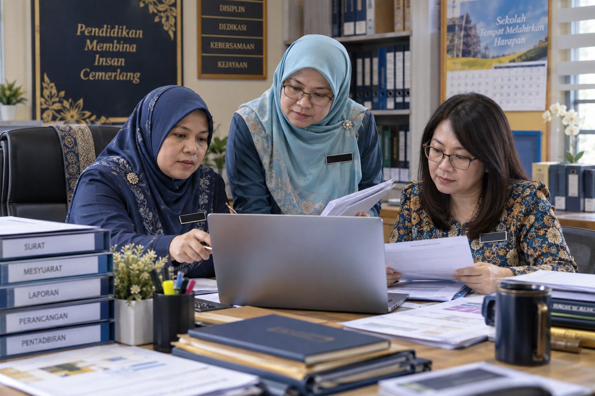

Latihan dokumen
Surat, laporan, kertas kerja dan minit mesyuarat dengan aktiviti amali.
Buka latihan →Sumber kendiri untuk dokumen rasmi, komunikasi, pengurusan majlis dan penjanaan prompt.

Surat, laporan, kertas kerja dan minit mesyuarat dengan aktiviti amali.
Buka latihan →Skrip solo, dua pengacara, pantun serta doa atau bacaan al-Quran.
Buka latihan →Lima kategori prompt untuk dokumen, komunikasi, program, analisis dan ucapan.
Buka koleksi →